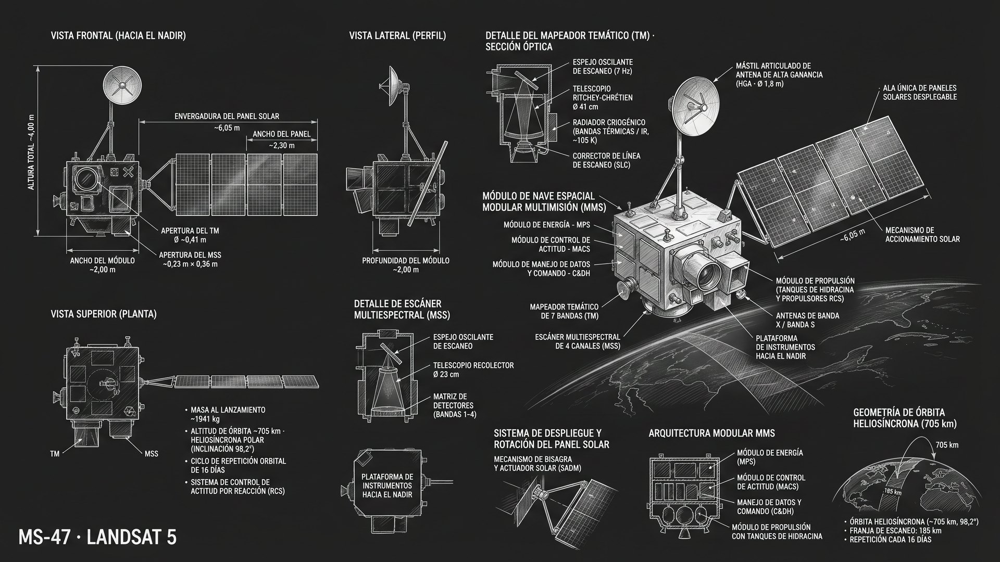

Landsat 5

Fue un satélite de observación de la Tierra lanzado el 1 de marzo de 1984 con los instrumentos MSS y TM, diseñado para tres años y operativo casi veintinueve. Reunió unos 3,8 millones de escenas y tiene el récord Guinness del satélite de observación de la Tierra que más tiempo ha funcionado.
Desactivado el 5 de junio de 2013 tras casi 29 años de servicio, diez veces su vida de diseño de tres años. Quedó sin adquisición ni transmisión de datos y su archivo de 3.870.273 escenas TM y MSS sigue siendo un registro continuo y calibrado de la superficie terrestre. Personas: Jim Irons
Lo que hizo
- Primera imagen, 6 de marzo de 1984 — Cinco días después del lanzamiento, el Thematic Mapper captó el lago Superior helado, el norte de Minnesota y las islas Apostle, en Wisconsin, con las bandas 4-3-2: una de las primeras imágenes claras de la misión.
- Récord Guinness y desactivación — Con casi 29 años en servicio obtuve el récord Guinness al satélite de observación de la Tierra más longevo y me desactivaron el 5 de junio de 2013. Mi gran tanque de combustible auxiliar, previsto para reparaciones en órbita que nunca ocurrieron, permitió estirar la misión durante décadas.
Modelo 3D, chat y cómic, en tres idiomas
Fuentes
- science.nasa.gov/mission/landsat-5/
- landsat.gsfc.nasa.gov/satellites/landsat-5
- www.usgs.gov/landsat-missions/landsat-5
Ver el índice completo · Proyecto del NASA Space Apps Challenge 2026. Contenido con fuentes citadas.